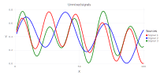

Blind Source Separation using Unsupervised Machine Learning
MADS is used to perform unsupervised machine learning and extract (separate) mixed signals (signatures) present in synthetic datasets.
Frequently, several different physical phenomena, processes, or mechanisms can cause transients in the observed data. These transients may have different spatiotemporal patterns.
The discovery of the hidden (latent) signatures (sources/signals) caused by the underlying physical processes can be challenging.
For example, in the case of water-level (hydraulic pressure) data, these might be barometric pressure fluctuations, tidal effects, pumping effects, etc. In the case of geochemical contamination problems, these may represent a mixture of different groundwater types (contaminant sources) with different initial geochemical compositions.
The separation of the different signals observed in the data is important for many tasks, including site characterization, model conceptualization, and setup.
Below, we present a series of synthetic examples showing how transient data can be used to identify (separate/unmix) the original signals.
More complicated Blind Source Separation (BSS) analyses can be found in our papers (see references below).
All the analyses presented below are performed using examples/blind_source_separation.jl.
See also the related Jupyter notebook.
Synthetic Sources (Case 1)
Here, synthetic sources are generated using sine functions and random noise.
Original signals (assumed unknown)
Let us assume there are 3 unknown sources (physical processes/phenomena) causing transients in some observable state variable. Let us assume the transients (signals) associated with these 3 unknown sources look like this:

Mixed signals observed at 4 different monitoring locations (representing 4 different observation streams)
Let us assume that the transients of the original unknown sources are observed as a mixture at 4 different monitoring locations (observation points). Let us assume that the mixtures look like this:

Reconstructed (unmixed) original signals (sources) based on the observed data
We want to find the original unknown signals (sources) based on the observed mixtures above. BSS method in MADS allow us to do this. From the mixture at the 4 monitoring locations (observation points), we can reconstruct (unmix) original signals (sources) almost perfectly:

Synthetic Sources (Case 2)
Now, synthetic sources are generated using sine functions and random noise representing a disturbance of normal pace of life.
Original sources (assumed unknown)

Mixed sources observed at 7 different observation points

Reconstructed (unmixed) original signals based on the observed data

Synthetic Sources (Case 3)
Now, synthetic sources are generated using just sine functions.
Original sources (assumed unknown)

Mixed sources observed at 4 different observation points

Reconstructed (unmixed) original signals based on the observed data

Synthetic Sources (Case 4)
Now, synthetic sources are generated using random noise.
Original signals (assumed unknown)

Mixed signals observed at 4 different observation points

Reconstructed (unmixed) original signals based on the observed data

References
- Alexandrov, B.S., Vesselinov, V.V., Blind source separation for groundwater pressure analysis based on nonnegative matrix factorization. Water Resources Research, 0.1002/2013WR015037, 2014. PDF
- Vesselinov, V.V., Alexandrov, B.S., O'Malley, D., Nonnegative Tensor Factorization for Contaminant Source Identification, Journal of Contaminant Hydrology, 10.1016/j.jconhyd.2018.11.010, 2018. PDF
- Iliev, F.L., Stanev, V.G., Vesselinov, V.V., Alexandrov, B.S., Nonnegative Matrix Factorization for identification of unknown number of sources emitting delayed signals, PLoS ONE, 10.1371/journal.pone.0193974. 2018. PDF
- Stanev, V.G., Iliev, F.L., Hansen, S.K., Vesselinov, V.V., Alexandrov, B.S., Identification of the release sources in advection-diffusion system by machine learning combined with Green function inverse method, Applied Mathematical Modelling, 10.1016/j.apm.2018.03.006, 2018. PDF
- Vesselinov, V.V., O'Malley, D., Alexandrov, B.S., Contaminant source identification using semi-supervised machine learning, Journal of Contaminant Hydrology, 10.1016/j.jconhyd.2017.11.002, 2017. PDF